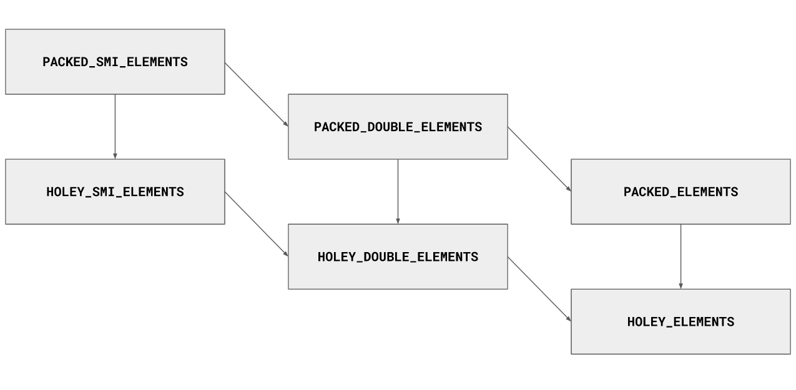

注：该文章翻译自https://v8.dev/blog/elements-kinds V8 的官方博客，这是关于解释在 V8 中「elements」的类型都有哪些的一篇文章，文章有翻译的不是很清楚的地方，欢迎各位指正
JavaScript 对象可以和任何属性有关联。对象属性的名称可以包含任何字符。有趣的是 JavaScript 引擎可以选择名称为纯数字的属性来进行优化，而这个属性其实就是数组 index。
在 V8 中，会特殊处理整数名称的属性（最常见的形式是由 Array 构造函数生成的对象）。尽管很多情况下这些数字索引属性的表现和其他属性一样，但为了优化，V8 将它们和非数字属性分开存储。在内部，V8 甚至给这些属性一个特殊的名称：elements。对象通过properties可以 map 到一些 value ，而数组通过 index 可以 map 到一些子元素。
尽管这些内部细节从来没有直接向 JavaScript 开发人员公开，但它们解释了为什么某些代码模式比其他模式更快。
常见的 elements 类型
在运行 JavaScript 代码时，V8 会追踪每个数组的 elements 的类型。V8 可以根据这些信息，在对拥有这种 elements 类型的数组进行操作时，进行针对性的优化。例如，当在数组上调用 reduce，map 或 forEach 时，V8 可以根据数组的 elements 类型来优化这些操作。
以这个数组为例:
const array = [1, 2, 3]; |
这个数组的 elements 类型是什么呢？如果用 typeof 来回答，结果就是这个数组含有 number 类型的数。在语言层面，这就是我们能看到的：JavaScript 不会区分整数(integers)，浮点数(floats)和双精度数(doubles)，它们都只是数字。但在引擎层面，我们可以做更精确地区分。该数组的 elements 类型为 PACKED_SMI_ELEMENTS。在 V8 中，术语 Smi 是指用于存储小整数(small integers)的一种特定格式。
然后，向同一个数组中添加浮点数会把这个数组转为更通用的 elements 类型
const array = [1, 2, 3]; |
向数组中添加字符串将再次改变数组 elements 类型
const array = [1, 2, 3]; |
到目前为止，我们已经看到了 3 种不同的 elements 类型，以下是基本类型
- Sm all i ntegers，也就是 Smi
- Doubles，用于不能用 Smi 表示的浮点数(floating-point)和整数(integers)
- 常规 elements，用于不能表示为 Smi 或双精度值(doubles)的值
注意，doubles 是 Smi 的一种更通用的变体，常规 elements 是 doubles 之上的另一种泛化。用 Smi 表示的数字集 是 用 double 表示的数字集的子集。
重点是 elements 类型只向一个方向转化，从特殊的(比如: PACKED_SMI_ELEMENTS) 转向更常规的(比如: PACKED_ELEMENTS)，比如一旦一个数组被标记为是 PACKED_ELEMENTS，它就不能再转化成 PACKED_DOUBLE_ELEMENTS 类型的了。
目前，我们已经了解到
- V8 会对每个数组赋予一个 elements 类型
- 数组的 elements 类型并不是一成不变的 —— 它可以在运行时改变。之前的例子中有从
PACKED_SMI_ELEMENTS转向PACKED_ELEMENTS的 - elements 类型只能从特定类型转向常规类型
PACKED 和 HOLEY 类型
目前我们只谈到了 packed 类型的数组。在数组中创建 holes (使数组变稀疏)会将其 elements 类型降级成它的 “holey” 版本
const array = [1, 2, 3, 4.56, 'x']; |
V8 之所以有这种区别，它在优化 packed 类型数组的操作上比 holey 类型数组更积极。在 packed 类型数组上大多数操作都可以有效率地执行。相比之下，在 holey 类型数组上，这些操作就需要在原型链上进行额外的检测，并耗费性能高昂的查询。
到目前为止，我们已经看到每种基本 elements 类型(即 Smis，double 和常规 elements 类型)都有两种: packed 版本和 holey 版本。它们不仅可以从 PACKED_SMI_ELEMENTS 转变成 PACKED_DOUBLE_ELEMENTS，而且还可以从任何 PACKED 类型转变成其 HOLEY 对应类型。
总结一下:
- 最常见的 elements 类型有
PACKED类型和HOLEY类型 - 在 packed 类型数组上的操作比 holey 类型数组更有效率
- elements 类型可以从
PACKED类型转变成HOLEY类型
elements 类型 格
这套标记转换系统被 V8 弄成了一个 格)。下面是只有几个 elements 类型的简化示意图:

它只能通过格来向下转变。一旦一个 Smis 数组添加了单个浮点数(single floating-point)，即便之后使用 Smi 覆盖该浮点数，它都会被标记为 DOUBLE。同样的，一旦一个数组中出现了 hole，即便之后将这个 hole 补上了，它都会被标记为 holey。
V8 目前区分了 21 种不同的 elements 类型，每一种都可能有一堆优化
通常，更特定的 elements 类型支持更细粒度的优化。格中 elements 类型越往下，其对象的操作就会越慢。为了获取最佳性能，避免不太特定的类型的这种不必要的转换，应坚持使用最适合情况的特定 elements 类型。
性能建议
大多数情况下，elements 类型的追踪工作是在底层运行的，没必要考虑得那么细。但为了从系统中获取最大收益，以下几件事情是可以做的。
避免读取超出数组长度的内容
有点出乎意料(鉴于这篇文章的标题)的是，我们的第 1 个性能建议与 elements 类型追踪没有直接联系(尽管背后发生的事情有点像)。读取超过数组长度的数据会对性能产生惊人的影响，例如当 array.length === 5 时去读 array[42] 的数据。这个例子中数组下标 42 已经越界，数组本身就没这属性，JS 引擎就会耗费昂贵的性能去原型链上找。一旦加载遇到这种情况，V8 会记住 “这个加载需要处理特殊情况”，而且它的速度再也不会像读取到越界之前那么快了。
不要把循环写成这样:
// 不要这么写! |
这段代码读取数组中的所有元素，然后再读取一个元素。直到它发现 undefined 的或 null 元素时才结束。(jQuery 在一些地方就这么干的。)
相反，用老方式写循环，并不断迭代，直到到达最后一个元素。
for (let index = 0; index < items.length; index++) { |
如果循环的对象是可迭代的(比如数组和 NodeLists)就更好了，直接用 for-of
for (const item of items) { |
对于特定数组，也可以用内置 forEach
items.forEach((item) => { |
现在 for-of 和 forEach 的性能都和老式的 for 循环差不多了。
避免读取超出数组长度的内容！在这种情况下，V8 的边界检查会失败，检查该属性是否存在也就会失败，然后 V8 就要从原型链上找了。如果之后在计算中不小心使用到了这个值(也就是超出数组长度的值)，影响会更糟，例如:
function Maximum(array) { |
在这里，最后一次迭代超出了数组长度，返回结果为 undefined，这既影响了加载，又影响了比较：不再只比较数字，它要处理特殊情况。把终止条件改为正确的 i < array.length 可使本示例的性能提高 6 倍(在有 10,000 个元素的数组上进行测试，迭代次数只减少了 0.01%)。
避免 elements 类型的变化
通常，如果需要在一个数组上执行很多操作，试着只用一种元素类型，尽可能是特定类型，这样 V8 可以尽可能对这些操作进行优化。
这比看上去要难。比如仅向一个 Smi 数组中添加 -0 就能把它变成 PACKED_DOUBLE_ELEMENTS。
const array = [3, 2, 1, +0]; |
结果就是，之后对该数组的任何操作的优化都与对 Smi 的优化不一样。
避免使用 -0，除非明确需要在代码中区分 -0 和 +0。(最好不要这么做)
对于 NaN 和 Infinity 而言都是一样的。它们都被看作是浮点数(doubles)，所以在一个 SMI_ELEMENTS 数组中添加一个 NaN 或者是 Infinity，这个数组就会变成 DOUBLE_ELEMENTS
const array = [3, 2, 1]; |
要对一个整数数组进行大量的操作了，在它初始化时就应考虑下把 -0 变成 0，NaN 和 Infinity 之类的值就应该过滤掉。这样一来，这个数组才会维持在 PACKED_SMI_ELEMENTS 状态。这种一次性标准化后的开销对于后续优化都是值得的。
实际上，如果要对数字(numbers)数组进行数学操作，可以考虑下 TypedArray。这也有对应的特定的 elements 类型。
优先使用 array 而不是 array-like 的对象
有些 JS 里的对象，特别是 DOM，看起来像是数组但其实它们并不是真正意义上的数组。创建的 array-like 的数组就像下面这样
const arrayLike = {}; |
这个对象有 length ，也可以通过下标索引访问子元素(就像数组一样!)，但它在其原型链上缺少数组方法，比如 forEach。不过仍可以通过下面的方式在这个对象上调用数组的方法
Array.prototype.forEach.call(arrayLike, (value, index) => { |
这段代码调用 array-like 对象上内置的 Array.prototype.forEach 方法，结果符合预期。但这比在真数组上调用 forEach 慢，而后者在 V8 中已被高度优化。要多次在此对象上使用内置的数组方法的话，就应先把它转成真数组再用：
const actualArray = Array.prototype.slice.call(arrayLike, 0); |
这种一次性转换的开销对于后续的优化来讲都是值得的，特别是当对数组执行大量操作时。
arguments 对象是一个 array-like 对象，可以在其上调用数组内置函数，但这种操作不会像对真数组那样做全方位的优化。
const logArgs = function() { |
ES2015 rest 参数可以在这里帮个忙。它们可以用真数组，而不是优雅地用 array-like 的 arguments 对象。
const logArgs = (...args) => { |
现在你还有啥借口用 arguments 对象。
所以一般来讲，尽可能避免使用 array-like 的对象，应尽可能使用真数组。
避免多态
如果代码中要处理很多不同的 elements 类型的数组，它可能会导致多态操作，这比只用处理单个 elements 类型的代码要慢。
看如下示例，里面调用了各种 elements 类型的库函数。(注意下这不是原来的 Array.prototype.forEach 方法，除了本文讨论的对特定 elements 类型的优化，这个示例自己也有一套优化。)
const each = (array, callback) => { |
内置方法(如 Array.prototype.forEach)可以更有效地处理这种多态性，因此如果对性能敏感，请考虑使用这些内置方法而不是用户手写的库函数
V8 中关于单态与多态的另一个例子就跟对象的 shape 相关，也就是对象的隐藏类。要了解更多请参考 这篇文章
避免创建 holes
在真正的代码看来，访问 holey 数组和 packed 数组之间的性能差异通常太小，甚至无法测量。如果性能测试表明在优化的代码中保留每一条机器指令是值得的，那么可以尝试把数组维持在 packed 模式。比如说，我们要创建一个数组
const array = new Array(3); |
一旦数组被标记为 holey，它将永远保持在 holey 状态，即便之后数组里面有元素了
创建数组的更好方法是使用如下方式
const array = ['a', 'b', 'c']; |
如果事先不知道所有的值，可以创建一个空数组，然后将值 push 进去
const array = []; |
这种方法确保了数组永远不会转换为 holey elements 类型。因此，V8 可能会为这个数组的某些操作生成更快的优化代码。
调试 elements 类型
为了弄明白啥是对象的 elements 类型，可用 d8 的调试版本运行(通过在 debug 模式下从源码进行构建，或使用 jsvu 弄到预编译的二进制文件)
out/x64.debug/d8 --allow-natives-syntax |
这将打开一个 d8 REPL，其中可用 %DebugPrint(object) 等特殊函数。输出的 elements 字段显示了传递给 这个 debug 函数的对象的 elements 类型。
d8> const array = [1, 2, 3]; %DebugPrint(array); |
注意，COW 表示copy-on-write，这是另一个内部优化。
在调试构建中可用的另一个有用的 flag 是 --trace-elements-transitions。用上它能让 V8 提示你 elements 类型转换是在啥时发生的。
$ cat my-script.js |